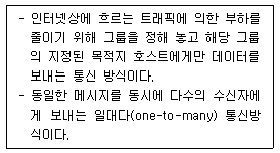

1과목: 방사선투과시험원리
1. 다음 중 작은 불연속이나 결함을 분리, 검출할 수 있는 능력과 가장 관계가 깊은 것은?
2. 방사선의 에너지가 증가되면 피사체콘트라스트(Subject Contrast)는 어떻게 되는가?
3. 방사선투과시험에서 Laue법의 경우 X선 회절에 대한 설명으로 옳은 것은?
4. 방사선투과시험의 연박증감지(스크린)에 대한 설명 중 틀린 것은?
5. 표적물질이 텅스텐으로 된 X선 발생장치에 관전압200kV를 인가하였다면 X선 전환능률은 약 얼마인가? (단, 텅스텐의 원자번호는 74 이다)
6. 다음 중 고유 비방사능(Ci/g)이 가장 큰 방사성 동위 원소는?
7. 다음 비파괴검사법 중 발생 중인 결함의 검출에 가장 효과적인 시험법은?
8. 방사선투과시험에서 사진처리작업중 정착얼룩과 정착액의 성능저하를 방지하기 위해 처리하는 작업은?
9. 다음 중 발포누설시험법(Bubble Test)의 장점이 아닌 것은?
10. 다음 중 초음파탐삼시험에서 두꺼운 판의 용입부족을 검출하는데 가장 좋은 방법은?
11. 다음 비파괴검사법 중 알루미늄합금에 대한 결함 검출 감도가 가장 나쁜 것은?
12. 다음 중 방사선투과시험과 비교한 초음파탐상시험의 장점이 아닌 것은?
13. 헬륨질량분석 진공시스템 내부표면의 불순물 등에 흡수되어 있던 가스가 천천히 방출되면서 나타나는 허위누설을 무엇이라 하는가?
14. 다음 중 침투탐상제를 이용한 누설시험에서 침투탐상 시험과는 달리 포함되지 않아도 되는 절차는?
15. 다음 중 방사선투과시험의 장점이 아닌 것은?
16. 비자성체의 표면 및 표면직하 결함을 표면 개구 여부에 관계없이 검출하고자 할 때 다음 중 어느 방법이 가장 적한한가?
17. 다음중 비파괴검사의 종류와 그 특성을 연결한 것으로 틀린 것은?
18. 다음 중 납 용기나 철 케이스 내에 들어 있는 물질의 양을 검사하는데 효과적인 비파괴검사법은?
19. 결함의 종류에 따른 비파괴시험 방법을 열거한 것으로 적절하지 않은 것은?
20. 와전류 탐상시험에서 프로브형 탐촉자로 평판 형대의 시험편을 검사할 때, 시험편의 표면과 코일 사이의 간격이 변화하면 와전류 신호가 발생한다. 이러한 현상을 정의하는 용어는?
2과목: 방사선투과검사
21. 맛대기 용접부의 방사선 투과사진에서 최고 및 최저 농도에 대한 설명으로 옳은 것은?
22. 노출도표에 대한 다음 설명중 틀린 것은?
23. 형광증감지의 형광체가 X선 조사로 형광을 방출하는 주된 원리는?
24. 다음 중 압연 강재에 있는 내부 결함으로서 기포 또는 불순물 등에 의해 압연 방향을 따라 층상조직으로 형성된 결함은?
25. 강판이 판두께 방향으로 큰 인장응력을 받고 있는 용접이음부에서 강판 표면에 평행하게 발생하는 층상의 균열을 라멜라테어(lamellar tear)라 한다. 다음 중 라멜라테어의 발생원인이 아닌 것은?
26. 다음 중 방사선 투과사진의 피사체콘트라스트에 영향을 주는 인자가 아닌 것은?
27. X선 발생장치의 관전류의 조정기를 조작할 경우 나타나는 현상은?
28. 방사선 투과사진에서 용재의 용입은 양호하나 용융이 부적절하여 용접금속과 모재 사이에 매우 좁고 직선의 검은 선들로 용접부의 한쪽 면에 평행하게 나타나는 결함은?
29. 강용접부에서 기공이 발생하는 가장 일반적인 원인은?
30. 어떤 X선관에서 발생되는 X선의 최단 파장이 0.02Å, 최장 파장이 0.08Å 이었다. 이 때 가해진 관전압은 약 몇 kV인가? (단, 플랑크 상수는 6.63×10-34J・s, 1eV 는 1.602×10-19J이며, X선관에서의 흡수는 무시한다.)
31. 방사선 투과사진의 수동현상과 자동현상을 비교 설명한 것 중 자동현상에 대한 설명으로 틀린 것은?
32. 다음 중 계조계는 주로 어디에 사용되는가?
33. 다음 중 용접부 투과사진의 유효길이 범위 내에서 투과도계의 식별도는 만족하지만 사진 농도의 일부분이 만족되지 않은 경우 가장 적절한 처리 방법은?
34. 텅스텐을 표적으로 하는 X선관에서 관전압을 변경하는 경우 발생하는 X선의 파장과 강도의 관계에서 관전류를 일정하게 하고 관전압만 상승시킬 때 일어나는 현상의 설명으로 틀린 것은?
35. Ir-192 30Ci 인 선원에 대하여 38cm 인 철판을 차폐체로 사용했다면 차폐체를 투과한 강도는 약 몇 Ci인가? (단, 철판에 대한 Ir-192 의 반가층은 약 15cm이다.)
36. 다음 중 방사선투과검사에서 명료도(Definition)에 영향을 미치는 인자와 거리가 먼 것은?
37. 필름에 직접 접촉된 납스크린의 3가지 주요 기능이 아닌 것은?
38. 용접 파이프를 이중벽양면촬영법(DWDI)으로 촬영하는 경우에 관한 설명으로 틀린 것은?
39. 방사선 동위원소 Ir-192 를 사용하는 경우, 일반거으로 사용되는 전방 연박증감지(lead foil screen)의 두께범위로 옳은 것은
40. 두꺼운 강용접부의 방사선투과검사에서 형광증감지를 사용하는 주 목적은?
3과목: 방사선안전관리,관련규격및컴퓨터활용
41. 강용접 이음부의 방사선투과 시험방법(KS B 0845)에서 두께가 80mm 인 평판형상의 강용접부를 투과 하여 얻은 투과사진상이 1종 결함일 때 결함으로 산정하지 않는 크기는 몇 mm이하인가?
42. 방사선 측정기기 중 방사선 작업구역 부근의 방사선량을 측정하기 위한 기기는?
43. 알루미늄 주물의 방사선투과 시험방법 및 투과사진의 등급분류 방법(KS D 0241)에서 대상으로 하는 결함과 형상이 아닌 것은?
44. 보일러 및 압력용기에 대한 방사선투과검사(ASMESec.V.Art.2)에 따라 원통형 시원체에 선원을 시험체 축 위에 놓고 한번의 노출로 원주 전체가 1개이상의 필름홀더를 사용하여 촬영되는 경우 필요한 투과도계의 최소 개수는?
45. 방사성 동위원소 또는 방사선발생장치의 사용실 및 작업실에 방사능 표지를 출입구에 붙이고자 할때 방사능 표지의 반지름 최소 크기로 옳은 것은?
46. 다음 중 같은 종류의 단위로 옳게 짝지워진 것은?
47. 원자력법 시행령에서 규정하는 일반인에 대한 연간 유효 선량한도는 몇 밀리시버트 인가?
48. 보일러 및 압력용기에 대한 방사선투과검사(ASME Sec.V.Art.2)에서 단일벽 관찰을 할 때 필름측에 위치마커를 부착해야 하는 경우는?
49. 3Mev γ선에 대한 알루미늄의 질량감쇠계수가 0.09cm2/g일 때 알루미늄의 3Mev γ선에 대한 반가층은 약 몇 cm인가? (단, Al의 밀도는 2.7g/cm3이다.)
50. 다음 중 인체에 대한 방사선 피폭을 줄이기 위한 방법으로 적절하지 않은 것은?
51. 강용접 이음부의 방사선투과 시험방법(KS B 0845)에서 결함 분류는 모두 몇 종별로 분류하는가?
52. 원자력법에서 규정한 방사선 관리구역에 대한 설명으로 틀린 것은?
53. 보일러 및 압력용기에 대한 표준 방사선투과검사(ASME Sec.V. Ar.22 SE-1025)에 따라 유공형 투과도계를 사용하여 투과검사를 수행 중이다. 투과 사진의 감도 레벨이 2-2T 로 요구될 때, 50mm 인강재에 대한 투과도계의 두께는?
54. 보일러 및 압력용기에 대한 표준방사선투과검사(ASME Sec.V. Art.22 SE-1025)에서 직사각형 투과도계 측면에 노치(notch)를 가공하여 노치의 위치 및 개수를 표시하는 목적은 무엇인가?
55. 강용접 이음부의 방사선투과 시험방법(KS B 0845)에서 모재 두께가 40mm 인 강용접부의 투과사진에 제2종 결함의 길이가 12mm인 경우의 결함분류는?
56. 다음 중 인터넷상에서 정보와 의견을 교환하기 위한 토론 그룹은?
57. 다음 중 컴퓨터 운영체제에 대한 설명으로 틀린 것은?
58. 다음은 국가를 나타내는 도메인들이다. 영국에 해당하는 도메인 명은?
59. 다음이 설명하고 있는 통신 방식은?

60. 해커가 해킹을 하여 사용자 권한을 얻어낸 후 시스템 관리자의 권한을 훔치고, 이후 자신이 다음에 재침입할 것을 대비하여 만들어 놓고 나가는 프로그램을 무엇이라 하는가?
4과목: 금속재료학
61. 구리에 함유된 불순물 중 전기 전도도에 가장 악영향을 미치는 원소는?
62. 다음 중 구상흑연 주철에 대한 설명으로 옳은 것은?
63. 100배로 확대된 다결정 금속재료의 내부조직 사진에서 평방인치당 결정립자의 수가 64개일 때 이 금속 재료의 ASTM 결정입도는?
64. 금속의 회복(recovery)에 대한 설명중 틀린 것은?
65. Cr계 슾인리스강의 취성에 대한 설명 중 틀린 것은?
66. 일반적으로 상용한도가 300℃ 까지 사용할 수 있는 열전대는?
67. Hadfield 강에 대한 설명으로 틀린 것은?
68. 공저형 상태도를 나타내는 대표적인 합금은?
69. 다음 동합금에 대한 설명으로 틀린 것은?
70. Mg 금속에 대한 설명으로 틀린 것은?
71. β-Sn 이 α-Sn 으로 변태하는 이론적인 온도는 약 몇 ℃인가?
72. 기계적 rkde, 열적 특성 및 내식성 등을 충분히 향상시켜 하중을 지탱하고 열 등에 견뎌야 하구조물 또는 그 부품에 사용하는 파인 세라믹스는?
73. 다음 중 강제적으로 완전 탈산시킨 강은?
74. 고강도 알루미늄 합금에서 두랄루민과 초초두랄루미네는 어느 게통의 합금인가?
75. 다음 중 Pb 이 포함된 베어링 합금이 아닌 것은?
76. 다음 중 주철의 성장을 방지하는 방법으로 틀린 것은?
77. 다음 초경합금 분말을 혼합 제조할 때 가열온도가 가장 높은 조건은?
78. 특수강 중에 각종 원소의 첨가 효과를 설명한 것으로 틀린 것은?
79. 로크웰 경도 시험에서 가장 큰 하중을 사용하는 스케일은 무엇인가?
80. 다음 중 Ni - Fe 합금이 아닌 것은?
5과목: 용접일반
81. 불활성 가스 텅스텐 아크 용접에서 사용되는 텅스텐전극 중 스테인리스강의 용접에 적당한 것은?
82. 연강용 피복금속 아크 용접봉에 E4313이라고 적혀있다면 용착금속의 최소 인장강도는 N/mm2이상인가?
83. 세로비드 노치 굽힘시험 방법으로 시험편의 표면에 세로길이로 비드 용접하여 이에 직각으로 V노치를 붙인 시험편을 구부리는 방법의 연성시험법은?
84. 아크 쏠림(Arc blow)의 방지대책으로 틀린 것은?
85. 연강용 피복 아크 용접봉 종류 중 E4311의 피복제 계통은?
86. 용접 결함의 분류 중에서 치수상 결함에 해당하는 것은?
87. 기공 또는 용융 금속이 튀는 현상이 발생한 결과, 용접부 바깥면에서 나타나는 작고 오목한 rnad을 뜻하는 용어는?
88. 용접법의 분류에서 저항 용접에 해당하는 것은?
89. 용접봉의 용융 속도에 관한 설명 중 틀린 것은?
90. 겹치기 이음, T이음, 모서리 이음에 있어서 거의 직교하는 두 면을 결합하는 3각형 단면의 용착부를 갖는 용접은?
91. 산소-아세틸렌 불꽃의 종류가 아닌 것은?
92. 서브머지드 아크용접에서 2개의 전극와이어를 독립된 전원(교류 또는 직류)에 접속하여 용접선에 따라 전극의 간격을 10~30mm 정도로 하여 2개의 전극 와이어를 동시에 녹게 함으로써 한꺼번에 많은 양의 용착금속을 얻을 수 있는 용접법은?
93. 용접부에 잔륭ㅇ력이 생길 때의 처리방법으로 가장 적합한 것은?
94. 피복 아크용접에서의 아크 길이와 아크 전압과의 관게 설명으로 가장 적합한 것은?
95. 용접작업시 수축량에 미치는 용접시공 조건의 영향에 대한 설명 중 틀린 것은?
96. 서브머지드 아크용접에서 와이어의 적당한 돌출길이는 와이어 지금의 몇 배 전후로 하는 것이 적당한가?
97. 교류용접기와 비교한 직류 용접기의 일반적인 특징 설명으로 틀린 것은?
98. 제품의 한쪽 또는 양쪽에 다수의 돌기를 만들어 이 부분에 용접 전류를 집중시켜 접합하는 용접방법은?
99. 아크전류가 180A, 아크전압이 15V, 용접속도가 18cm/min 일 때, 용접길이 1cm당 용접입열은 몇 Joule/cm 인가?
100. 이음 형상에 따른 심 용접기의 종류가 아닌 것은?